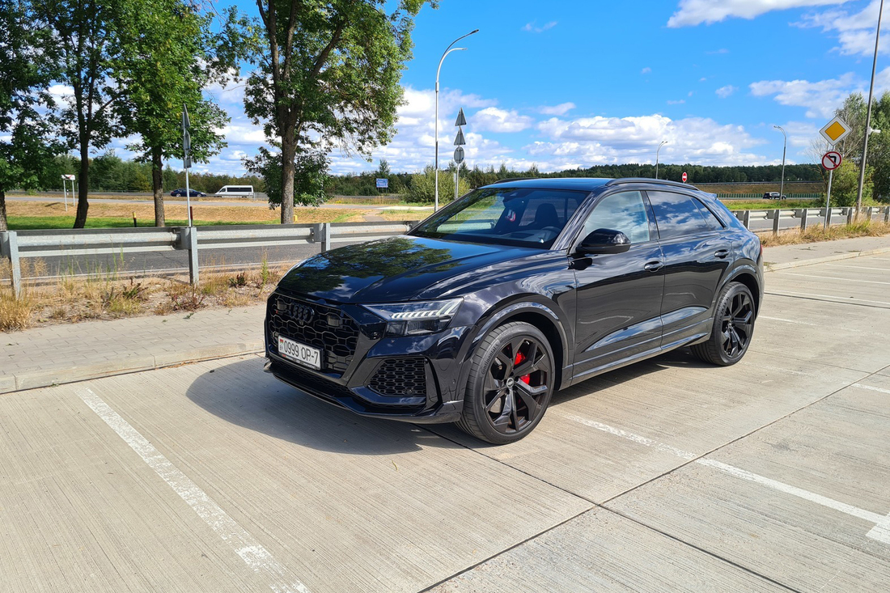
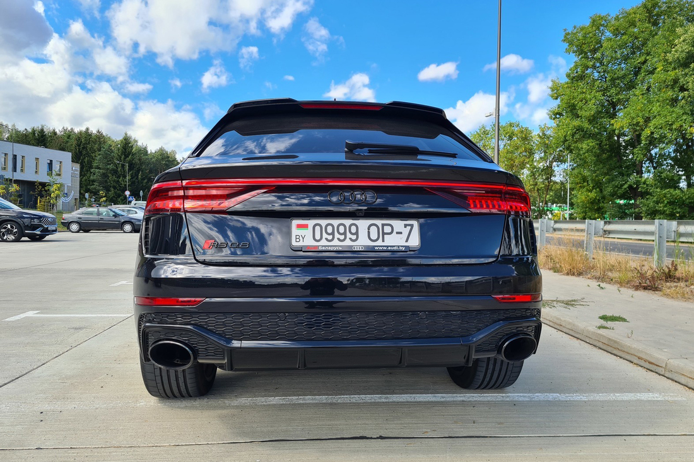

Как выглядит Audi, которую продают за $250 000?
Конечно, когда речь заходит об Audi за крупную сумму, имеется в виду какой-то невероятный тюнинг или суперредкая версия. На продажу на «Автобарахолке» выставлен как раз такой экземпляр — Audi RS Q8 I 2021 года выпуска с четырехлитровым мотором и АКПП. По словам продавца, машине всего один год, за который она пробежала лишь 31 тысячу км.
Бензиновый двигатель объемом 4 литра выдает 600 л. с. / 800 Нм. «Состояние нового автомобиля, — заверяет продавец. — Обслуживание производилось у официального представителя. Максимальная комплектация — есть все, кроме карбон-керамических тормозов».

Список спецификации действительно впечатляет:
- навигационная система, CarPlay, Android Auto, Bluetooth, AUX, USB, розетка 12V;
- все электростеклоподъемники, электрорегулировка руля, пневматическая подвеска, многозонный климат-контроль, парктроники задний и передний, камера 360°, бортовой компьютер, бесключевой доступ, цифровая приборная панель, мультируль, электропривод крышки багажника, система активной помощи при парковке;
- матричные фары, электрообогрев лобового стекла, датчики дождя и света, система адаптивного освещения, автоматическое управление дальним светом;
- литые диски R23, тонированные стекла, центральный замок;

- 5 мест, сиденья из кожи, темный салон, электрорегулировка и подогрев всех сидений, вентиляция передних сидений, передние сиденья с массажем, память положения сидений, панорамная крыша, люк, отделка кожей рулевого колеса, обогрев рулевого колеса, подрулевые лепестки переключения передач, отделка кожей рычага КПП, черный потолок, отделка потолка алькантарой, электрорегулировка и электроскладывание зеркал заднего вида, их автозатемнение, салонное зеркало с автозатемнением, доводчики дверей;
- круиз-контроль, антиблокировочная система (ABS), системы стабилизации, помощи водителю, ночного видения, крепления детских автокресел.
Заявленная цена машины — $250 000.